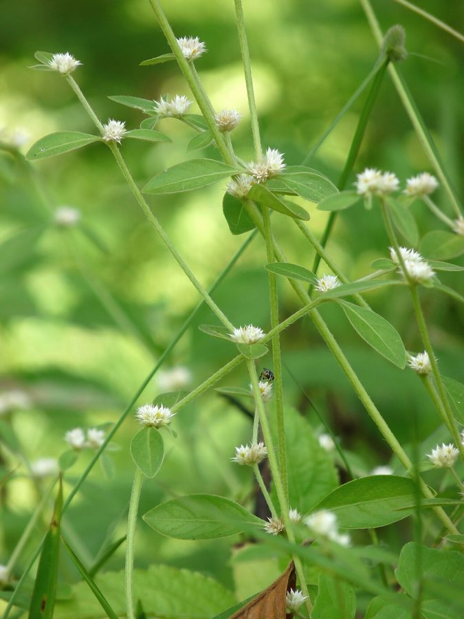

गुदड़ी सागSessile Joyweed
Alternanthera sessilis · Amaranthaceae · FLR-0150

- Scientific nameवैज्ञानिक नाम
- Alternanthera sessilis (L.) R.Br. ex DC.
- Familyकुल
- Amaranthaceae
- Hindiहिंदी
- गुदड़ी साग
- Local namesस्थानीय नाम
- gudri saag, gudari saag, garundi, saranchi, sessile joyweed
- Status hereयहाँ की स्थिति
- native
- Movementआवागमन
- Resident, here all year
- IUCNIUCN
- not evaluated
- Reviewसमीक्षा
- audited and independently read
When to look कब देखें
Present all year.साल भर मौजूद।
Uses and possibilities उपयोग और संभावनाएँ
Drawn from the documented uses in the profile below, where each is labelled traditional, current or a research lead. All uses →
गुदड़ी साग / Sessile Joyweed
Alternanthera sessilis (L.) R.Br. ex DC. — Amaranthaceae
गुदड़ी साग (जौयविड, बौनी सुंदरी) — पानी के किनारे, नालों और बाढ़ वाली जमीन पर उगने वाली नरम बेल। बहुत छोटी, पत्तियाँ चिकनी और कोमल, हरी-भरी पूरे साल। पत्तियाँ और कोमल तने खाने लायक हैं — सब्जियों में डाली जाती हैं, साग भी बनता है। गाँव की महिलाओं को यह पसंद है क्योंकि इसे पानी के पास जमीन में ही उगा सकते हैं और हर समय तोड़ सकते हैं।
Quick Identification त्वरित पहचान
| Feature | Description |
|---|---|
| Plant form | Creeping to ascending annual or perennial herb, 15–40 cm |
| Leaves | Opposite, small, oblong-lanceolate, 1–4 cm, sessile or nearly so, hairless |
| Flowers | Tiny, white to pale green, clustered in axillary spikes, inconspicuous |
| Stem | Slender, rooting at lower nodes, soft and tender |
| Texture | Entire plant is soft, hairless, succulent |
| The test | Break a stem; juicy and tender; tastes mild and slightly salty |
Field tip: A tiny, creeping plant at the wet margin of ponds and ditches, with small opposite leaves and negligible flowers. The entire plant is edible and is harvested for food in some regions.
हिंदी — कैसे पहचानें: पानी के किनारे की बहुत छोटी बेल, विपरीत छोटी पत्तियाँ, कोई फूल नहीं दिखते। हरी-भरी, कोमल, खाने लायक।
Morphology आकारिकी
Biometrics (wild and cultivated forms, tropical and subtropical regions):
| Measurement | Range |
|---|---|
| Plant height | 15–40 cm |
| Stem diameter | 1–3 mm |
| Leaf length | 1–4 cm |
| Leaf width | 0.5–1.5 cm |
| Flower length | 1–2 mm |
| Flower cluster length | 3–8 mm |
Root system: Adventitious roots arising from lower stem nodes, allowing the plant to root wherever it touches moist soil.
Stem: Slender, terete (cylindrical), succulent, hairless or with very fine hairs. The plant roots at the nodes, facilitating vegetative spread.
Leaves: Opposite, decussate, sessile or nearly so, oblong-lanceolate, with an acute apex. The leaf blade is thin, hairless, and bright green. The margin is entire.
Flowers: Very small, white to pale green, arranged in short axillary spikes (1–5 mm). The flowers are inconspicuous and easily overlooked. Flowering is sparse and inconsistent.
Fruit: A small, flattened, one-seeded fruit (utricle).
Reproduction: Primarily vegetative through rooting of the creeping stems; sexual reproduction is secondary.
Associated Species / Interactions संबंधित प्रजातियाँ
- Water-associated plants: Often found with Pickerel Weed, ludwigia, and other wet-ground plants.
- Crop association: Common as a minor weed in rice fields and along paddy margins.
- Human use: Harvested for food and as livestock fodder.
Life Cycle / Phenology जीवन चक्र
| Month / season | Event |
|---|---|
| Year-round | Vegetative growth in moist habitats; active in monsoon |
| Monsoon (June–October) | Rapid growth and spread |
| Dry season (November–May) | Reduced growth if soil stays moist; plants may die if soil dries completely |
| Reproduction | Primarily vegetative (stolon-like spread); flowers and seeds are rarely produced |
The plant is essentially evergreen in moist habitats. In dry seasons, it survives only where there is adequate moisture.
हिंदी: साल भर हरी-भरी। बरसात में तेज़ी से बढ़ती है। सूखे समय में सिर्फ पानी के पास जीवित रहती है।
Pests and Diseases कीट और रोग
- No significant pests or diseases.
- Leaves may occasionally be eaten by small herbivorous insects; rarely serious.
Agricultural / Human Relevance कृषि प्रासंगिकता
Food plant:
- Green vegetable. The tender shoots and leaves are eaten as a cooked vegetable in parts of South and Southeast Asia. In eastern Uttar Pradesh and other parts of India, it is occasionally harvested for home consumption.
- Nutritional value. The plant is nutritious, providing vitamins A and C and minerals, particularly when fresh.
- Preparation. The tender leaves and shoots are typically cooked in oil with spices, added to curries, or stir-fried.
Livestock fodder:
- Animal feed. The plant is palatable to cattle, goats, and pigs. In some areas, it is intentionally grown or encouraged as supplementary fodder.
Weed status:
- Minor weed. In rice fields and other wet crops, Alternanthera sessilis is a minor weed but is generally tolerated because it is edible and of low competitive threat.
- Soil binding. The plant's mat-forming growth can actually help stabilize wet soils.
Today. The plant is underutilized but is being promoted in some regions as a nutritious, easy-to-grow, water-tolerant green vegetable. It requires no purchased inputs.
Research direction (a lead, not a result). Nutritional studies on the plant and its potential for improved cultivation and promotion in low-income farming systems are ongoing.
हिंदी: कोमल पत्तियाँ सब्जी में डाली जाती हैं। सरसों के तेल में भून कर खाते हैं। पशुओं को भी देते हैं। बहुत आसानी से उगती है, कोई खर्च नहीं।
Expected Locally स्थानीय रूप से अपेक्षित
Not a field record. Written from published accounts for eastern Uttar Pradesh. No confirmed local sighting yet — if you have seen it, that is what the atlas needs.
अभी तक स्थानीय पुष्टि नहीं। यह विवरण प्रकाशित स्रोतों से है, किसी अवलोकन से नहीं।
To be expected in wet rice fields, along canal and pond margins, and in damp disturbed ground throughout Basti district. It is a common monsoon plant.
Distribution वितरण
Global range: Native to tropical Asia and Australia; naturalized in tropical and subtropical regions worldwide.
In India: Widespread throughout the subcontinent in moist habitats, particularly in the monsoon zones and near water bodies.
In Uttar Pradesh: Common in eastern and central districts.
In Basti district / eastern UP: Common in wet fields and along water margins.
Research Questions शोध प्रश्न
Anyone can investigate these | कोई भी इन प्रश्नों की जाँच कर सकता है
- How fast does gudri saag grow from a single cutting planted in a pot of wet soil, and how much leaf biomass can be harvested weekly? — Plant cuttings; measure growth; harvest weekly.
- Is the nutritional value (vitamins and minerals) of gudri saag similar to that of spinach or other commercial greens? — Collect fresh leaves; send to a lab for analysis.
- Can gudri saag be grown intentionally in a shallow trench filled with water year-round as a household vegetable? — Set up a trial; grow and harvest; record yield and effort.
- Does the plant actually flower and produce seeds in your local conditions, or does it spread only vegetatively? — Observe plants for several months; record flowering.
- Which animals eat gudri saag in your village, and do they grow larger or healthier on it? / कौन से जानवर गुदड़ी साग खाते हैं, और इससे बड़े होते हैं? — Observe livestock; ask farmers about the effect of feeding gudri saag.
Similar Species मिलती-जुलती प्रजातियाँ
| Species | How to tell apart | हिंदी |
|---|---|---|
| ludwigia (Ludwigia octovalvis) | Leaves are alternate, not opposite; flowers are larger and yellow | लुडविजिया — एक ओर पत्तियाँ, पीले फूल |
| acanthus (Acanthus ilicifolius) | Much larger leaves with spiny margins; flowers are larger and purple | काँटेदार पत्तियाँ, बड़े फूल |
| Speedwell (Veronica anagallis) | Leaves opposite but broader; flowers are blue; larger plant | वेरोनिका — नीले फूल, बड़ा पौधा |
Field rule: A tiny, creeping plant at pond margins with small, opposite, hairless leaves and no conspicuous flowers is gudri saag.
Taxonomy & Classification वर्गीकरण
Original description. Originally described as Gomphrena sessilis by Linnaeus in 1753 and transferred to Alternanthera by Robert Brown in 1810. The epithet sessilis means "sessile" (without a petiole), referring to the leaves.
Subspecies. Monotypic — no subspecies currently recognised.
Family and order placement. Amaranthaceae, the amaranth family, in the order Caryophyllales. The genus Alternanthera holds about 200 species, mostly from the Americas but widely distributed in tropical Asia.
Phylogenetic notes. Alternanthera sessilis is one of the few Asian species in a predominantly Neotropical genus; it appears to have evolved in tropical Asia and Australia.
IUCN status rationale. Not evaluated. Common and widespread; not assessed.
Photo Gallery फोटो गैलरी
Photos needed आवश्यक फोटो
- [ ] Plant at pond margin showing creeping growth (पूरा पौधा)
- [ ] Close view of opposite leaves and stem texture (पत्तियाँ और तना)
- [ ] Plant being harvested for vegetables (तोड़ते समय)
- [ ] Prepared as a cooked vegetable dish (पकाई गई सब्जी)
No photos yet — add field photos to media/species/gudri_saag/ and run node scripts/sync_photos.js.
References संदर्भ
- Linnaeus, C. (1753). Species Plantarum. Laurentii Salvii, Holmiae, Vol. 1, p. 342. [as Gomphrena sessilis; original description]
- Brown, R. (1810). Prodromus Florae Novae Hollandiae, p. 415. [transferred to Alternanthera]
- Hooker, J.D. (1885). The Flora of British India, Vol. 4. L. Reeve, London.
- Duthie, J.F. (1903). Flora of the Upper Gangetic Plain and of the Adjacent Siwalik and Sub-Himalayan Tracts. Government Printing, Calcutta.
- Prakash, V. (2010). Nutritional and health benefits of minor vegetables (Alternanthera sessilis, Oenothera biennis). Nutrition Reviews 68(8): 480–488.
- GBIF Occurrence Data — Alternanthera sessilis, India (2026).
Source file: species/flora/crops_associated/gudri_saag.md